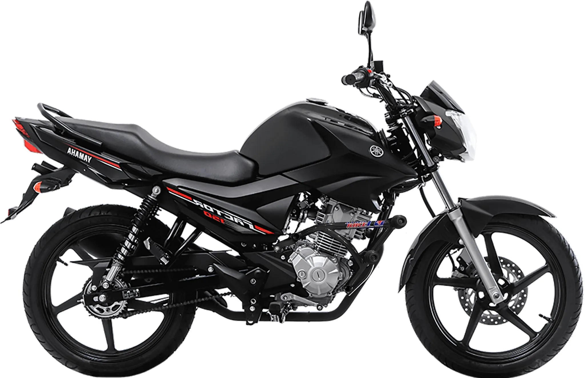

Yamaha Factor 150 Vale a Pena em 2026?

Yamaha Factor 150 2026: Vale a Pena Comprar?
A Yamaha Factor 150 é uma das motos mais vendidas da categoria street no Brasil. Em 2026, o modelo continua sendo uma opção forte para quem busca economia, confiabilidade e baixo custo de manutenção. Mas afinal, Yamaha Factor 150 vale a pena mesmo?
Com motor monocilíndrico de 149cc, injeção eletrônica e tecnologia BlueFlex, a moto entrega aproximadamente 12,4 cv de potência e torque de 1,3 kgfm. É uma motocicleta focada principalmente no uso urbano, ideal para deslocamento diário, trabalho e pequenas viagens.
Preço da Yamaha Factor 150 em 2026
O preço sugerido da Yamaha Factor 150 2026 parte de aproximadamente R$ 16.990 (sem frete). Dependendo da região e taxas adicionais, o valor pode chegar a R$ 18.500.
No mercado de usadas, os preços variam entre R$ 11.000 e R$ 15.000, dependendo do estado e quilometragem. Considerando o valor de compra, garantia de fábrica e baixo índice de desvalorização, muitos consumidores concluem que a Yamaha Factor 150 vale a pena como investimento seguro.
Consumo e Economia de Combustível
Um dos principais pontos positivos é o consumo. A Factor 150 faz em média 35 a 40 km/l na cidade, podendo ultrapassar 42 km/l em condições ideais.
Com tanque de 15,7 litros, a autonomia pode passar de 500 km. Isso significa menos paradas em postos e menor custo mensal com combustível, fator decisivo para quem usa a moto diariamente.
Desempenho e Conforto
A Yamaha Factor 150 não é uma moto esportiva, mas entrega desempenho suficiente para uso urbano. A velocidade máxima gira em torno de 110 km/h, adequada para avenidas e pequenas rodovias.
O conforto é um diferencial: banco largo, posição de pilotagem ereta e suspensão ajustada para ruas irregulares. Para quem trabalha com entregas ou deslocamentos longos na cidade, isso faz diferença.
- Painel digital completo
- Freio a disco dianteiro
- Rodas de liga leve
- Baixo peso (aprox. 134 kg)
Manutenção e Custo Anual
A manutenção é simples e barata. Revisões periódicas custam entre R$ 150 e R$ 350, dependendo da quilometragem.
O custo anual médio, considerando óleo, pneus e revisões básicas, fica entre R$ 1.000 e R$ 1.800 para quem roda cerca de 10.000 km por ano.
A rede de concessionárias da Yamaha é ampla, facilitando peças e assistência técnica.
Comparação com Concorrentes
Comparando com modelos como a Yamaha Fazer 150 e Honda CG 160, a Factor 150 se destaca pelo consumo equilibrado e preço competitivo.
Ela não é a mais potente da categoria, mas entrega excelente custo-benefício para quem prioriza economia e confiabilidade.
Conclusão: Yamaha Factor 150 Vale a Pena?
Sim, a Yamaha Factor 150 vale a pena em 2026 principalmente para quem busca economia, baixa manutenção e uso urbano eficiente. É uma moto confiável, com bom valor de revenda e consumo excelente.
Se a prioridade for potência ou viagens longas, talvez existam opções melhores. Porém, para o dia a dia, ela continua sendo uma escolha inteligente.